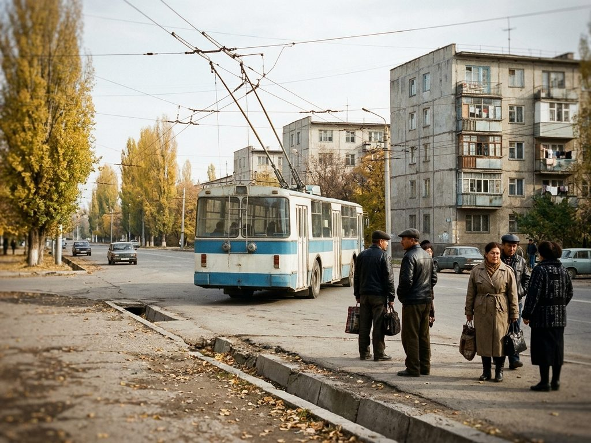

5 Communications Square – Hippodrome

Former trolleybus route 5 (to 2004).
| Type | Bus |
|---|---|
| Operator | Talas City Bus Park (municipal) |
| Fare | 2 som, paid to the conductor or the driver; municipal travel cards valid |
| Intervals | summer 14 min at peak times, 18 min other times; winter 17 / 21 min |
| Length | 10.0 km, about 41 min end to end |
Summer timetable in force today
From Communications Square
| 06 | 40 58 |
|---|---|
| 07 | 16 30 44 58 |
| 08 | 12 26 40 54 |
| 09 | 08 22 36 54 |
| 10 | 12 30 48 |
| 11 | 06 24 42 |
| 12 | 00 18 36 54 |
| 13 | 12 30 48 |
| 14 | 06 24 42 |
| 15 | 00 18 36 54 |
| 16 | 12 30 48 |
| 17 | 06 20 34 48 |
| 18 | 02 16 30 44 58 |
| 19 | 12 26 40 58 |
| 20 | 16 34 52 |
| 21 | 10 28 |
From Hippodrome
| 06 | 45 |
|---|---|
| 07 | 03 17 31 45 59 |
| 08 | 13 27 41 55 |
| 09 | 09 23 37 55 |
| 10 | 13 31 49 |
| 11 | 07 25 43 |
| 12 | 01 19 37 55 |
| 13 | 13 31 49 |
| 14 | 07 25 43 |
| 15 | 01 19 37 55 |
| 16 | 13 31 49 |
| 17 | 07 21 35 49 |
| 18 | 03 17 31 45 59 |
| 19 | 13 27 41 59 |
| 20 | 17 35 53 |
| 21 | 11 29 |
Winter timetable in force today
From Communications Square
| 06 | 55 |
|---|---|
| 07 | 16 33 50 |
| 08 | 07 24 41 58 |
| 09 | 15 32 53 |
| 10 | 14 35 56 |
| 11 | 17 38 59 |
| 12 | 20 41 |
| 13 | 02 23 44 |
| 14 | 05 26 47 |
| 15 | 08 29 50 |
| 16 | 11 32 53 |
| 17 | 14 31 48 |
| 18 | 05 22 39 56 |
| 19 | 13 30 51 |
| 20 | 12 33 |
From Hippodrome
| 07 | 00 17 34 51 |
|---|---|
| 08 | 08 25 42 59 |
| 09 | 16 33 54 |
| 10 | 15 36 57 |
| 11 | 18 39 |
| 12 | 00 21 42 |
| 13 | 03 24 45 |
| 14 | 06 27 48 |
| 15 | 09 30 51 |
| 16 | 12 33 54 |
| 17 | 15 32 49 |
| 18 | 06 23 40 57 |
| 19 | 14 31 52 |
| 20 | 13 34 55 |
Stops
| No. | Stop | Change to |
|---|---|---|
| 1 | Communications Square Baylanysh ayanty | 1 14 3 28 31 32 38 40 52 58 70 91 95 106 … |
| 2 | Bank of Irad Irad Banky | 1 14 3 28 31 32 40 52 58 70 91 95 106 118 … |
| 3 | City Hall Shaar meriyasy | 1 10 14 3 28 31 32 40 52 57 58 70 91 95 … |
| 4 | Central Post Office Borborduk pochta | 1 10 14 3 12 28 31 32 37 44 47 52 54 57 … |
| 5 | Liberty Boulevard Erkindik bulvary | 1 2 10 31 3 7 12 22 28 31 32 37 44 47 … |
| 6 | Central Square Borborduk ayant | 1 2 4 11 16 31 3 7 9 18 22 27 28 30 … |
| 7 | Opera Theatre Opera teatry | 15 31 39 40 43 46 55 69 74 76 79 88 101 114 … |
| 8 | Widow's Horse Memorial Jesir Atynyn Esteligi | 29 46 49 51 55 69 76 79 83 88 118 120 131 133 … |
| 9 | Hippodrome Ippodrom | 9 29 31 33 51 81 83 125 150 159 171 194 |
The return trip uses the same stops in reverse order.
Changes on this route
- Irad Day, 11 March: Central Square closed 07:00-14:00 (05.03.2026)
- Bus 5: Hippodrome stop moved for the spring races (17.03.2025)